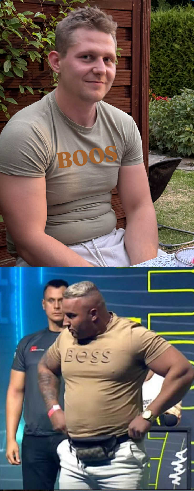

Powyższe zdjęcie przedstawia Boseka i Denisa, postacie często kojarzone z historią pruszkowskiej mafii. Ich wpływ na podziemie był szeroko komentowany, a ich działania stały się częścią miejskich legend. Strona została przygotowana zgodnie z Twoimi wytycznymi.